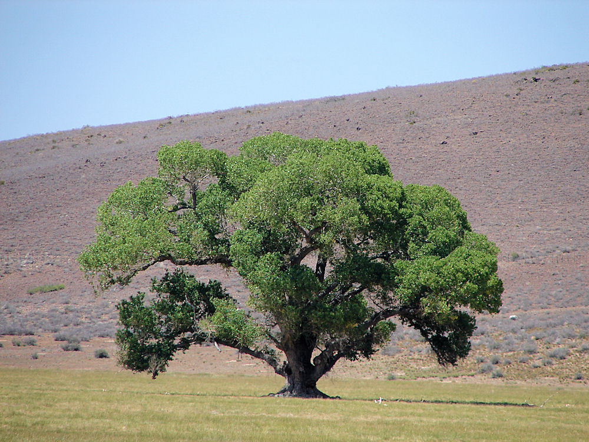

One of the original 13 colonies and one of the six New England states, Connecticut is located in the northeastern corner of the country. Initially an agricultural community, by the mid-19th century textile and machine manufacturing had become the dominant industries. The home of Eli Whitney and Samuel Colt, Connecticut was a leading manufacturer of guns and other arms. Today Connecticut lies in the midst of the great urban-industrial complex along the Atlantic coast, bordering Massachusetts to the north, Rhode Island to the east, Long Island Sound to the south and New York to the west. Hartford, in the north-central part of the state, is the capital. The state is roughly rectangular in shape, with a panhandle extending to the southwest on the New York border. In area, it is the third smallest U.S. state, but it ranks among the most densely populated. The state’s greatest east-west length is about 110 miles, and its maximum north-south extent is about 70 miles. Connecticut takes its name from an Algonquian word meaning “land on the long tidal river.” “Nutmeg State,” “Constitution State” and “Land of Steady Habits” are all nicknames that have been applied to Connecticut.
| Date of Statehood | Capital | Population | Size |
|---|---|---|---|
| January 9, 1788 | Hartford | 3.61 million | 5,543 square miles |
Qui Transtulit Sustinet (“He who transplanted still sustains”)
Mountain Laurel
American Robin
White Oak
Interesting facts